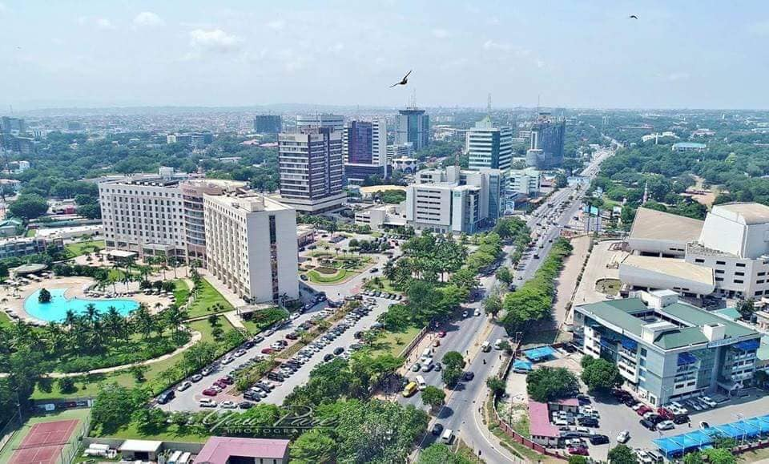
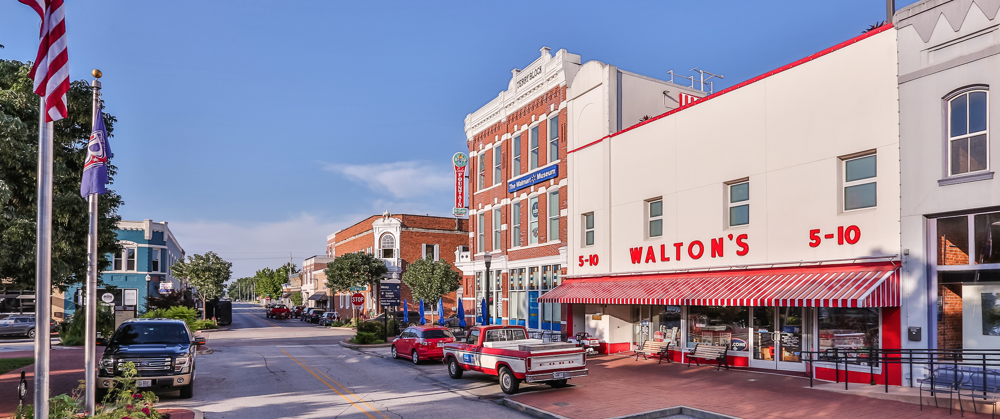

I was born in Accra, Ghana in West Africa. It is a popular African destination for Tourist and a thriving City. My parents left me with my Grandmother to go look for oppertunity in America and get settled.
My parents settled in Houston Texas and sent for me when I was just 5 years old. I grew up in the outskirts near Katy Texas, it was a great area and I remeber it foundly.
Durning my sophomore year in High School my Mother who had split fron my father at this point for many years decided to remarry and we moved to Daly City California.This was my first time traveling to a new place and it was definately different from Houston.
After a year in Daly City we moved to Richmond California which is not far from Berkely University.
In my last year of high school I decided to move to Reno with my Step Brother and also to attend Job Corps. While attending I joined the ROTC program and took a liking to the structure of the military. I joined the Army the follwing year
I found myself at Ft. Leonardwood Missouri basic training Camp aka, "Ft. Lost in the Woods" as we refered to it. It wasn't as bad as some people seemed to think.
Next came AIT which stood for Advanced Individual Training, in Ft. Sam Houston in beautiful and sunny San Antonio.
My first duty station was Ft. Riley in Kansas. Yes Kansas not far from K-State campus. I definately learned a lot while I was there.
My unit got deployed to Camp Eagle in Bosnia-Hertzgovina in 1999. It was a big growing experience for me.
After returning from Bosnia I re-inlisted to be stationed in Upstate NY at Ft. Drum. That first winter year was the coldest I had ever had!
In March 2002 I finished my enlistment and headed back to Richmond California to figureout what was next after the Army. I took soem college classes and worked at the local hospital.
Ultimatately I ended up moving back to the east Coast; to Syracuse NY not far from Where I was statioed before. I decided to put my medical skills to good use and go to Nursing school. Syracuse was another growth period for me
My firend Chris and I would head to Toronto on weekends to get away and I eventually met a girl and went back and forth to Toronto for a while but I eventually Came back to Syracude for a while

Travel nursing eventually Brought me to Hartford Conneticut where I made many friends and many oppertunities.
This brings me to muy current destination here in Bentonville Arkansas
